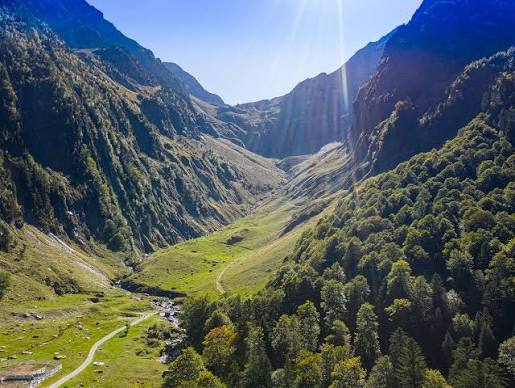

Vallée
de la Pique


⟹ Porte des Pyrénées Luchonnaises ⟸
Creusée par les glaciers quaternaires, la vallée de la Pique s'ouvre au sud de Luchon et grimpe vers la frontière espagnole en direction du port de Vénasque. Son relief en auge caractéristique, ses versants abrupts et son fond plat portent encore la marque du passage des glaces.

Dès l'époque romaine, les vertus des eaux chaudes de Luchon, alimentées par les mêmes massifs qui dominent la vallée, attirent curistes et voyageurs. Au XIXe siècle, la vallée de la Pique devient un passage obligé pour l'aristocratie thermale en villégiature, qui remonte ses gorges pour rejoindre les lacs et cascades d'altitude.
La vallée a également porté l'essor du pastoralisme pyrénéen : ses estives, occupées l'été par les troupeaux transhumants, structurent encore aujourd'hui le paysage entre forêts de hêtres et pelouses d'altitude.
Au XXe siècle, l'aménagement de la station de Superbagnères, perchée au-dessus de la vallée, a ouvert le territoire aux sports d'hiver, sans jamais effacer le caractère sauvage des gorges creusées par le torrent.
« Remonter la vallée de la Pique, c'est gravir en quelques heures les étages successifs des Pyrénées, de la forêt de hêtres jusqu'aux neiges éternelles. »
— Guide des Pyrénées luchonnaisesRecul des glaciers : les derniers névés permanents du massif frontalier reculent d'année en année sous l'effet du changement climatique, modifiant durablement l'alimentation en eau de la vallée.
Sur-fréquentation estivale : les sentiers les plus accessibles depuis Luchon subissent une pression touristique croissante, avec érosion des sols aux abords des cascades.
Déprise pastorale : l'abandon progressif de certaines estives favorise la fermeture des paysages autrefois entretenus par le pâturage.
Aménagements de la station : les infrastructures de ski de Superbagnères imposent une vigilance constante sur la préservation des milieux d'altitude environnants.
La vallée de la Pique offre des itinéraires pour tous les niveaux, du sentier familial près de Luchon à la haute randonnée alpine vers l'Espagne.
La cascade d'Enfer et le chemin des gorges conviennent aux familles, avec un dénivelé modéré depuis le centre de Luchon.
La montée à Superbagnères peut se faire à pied par les sentiers historiques ou en télécabine, pour les envies de panorama sans effort.
La vallée du Lys et ses cascades constituent une randonnée à la journée particulièrement prisée en fin d'été.
Le port de Vénasque reste réservé aux marcheurs expérimentés, pour une ascension exigeante vers la frontière espagnole et le massif de la Maladeta.